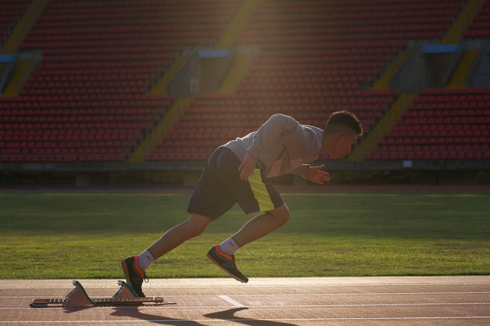

October 12, 2020
Tick. Tock. Tick. Tock. Tick. Tock.
I can't tell if that was the sound of time moving forward or if it was my sweat dripping on the cement tiles. The moment was approaching, but I just couldn't calm myself down. The staff led us through the gates, and we were on these burning hot race tracks in a sudden. So many things were happening at the same time within my sight, I just felt even dizzier.
The adrenaline in my veins pumped up and I can fell my heart beating faster and faster, as if you can notice the subtle pulsate on my chest. I'm not even a fast runner. I lack the power and the speed of a sprinter, I might only have a slightly better stamina. But here I am, in the middle of the track, with all these professional student athletes. There's definitely nothing that could calm me down at this point.
I walked towards track number eight, the number that is usually assigned to the slowest runner in the group. I started adjusting my starting block. The drops of sweat dripped onto the scorching metal part of the starting block, and they almost evaporated immediately.
I was a noobie last year. I knew nothing about this school. I was told by the office that they were missing credits in my transcript, including PE credits. I would love to play sports, but not during regular school times. I think that time should be spent on more meaningful stuff, not just to fool around. So the only option left was to join any sports team. There were a lot of choices, for instance, swimming, tennis, basketball, et cetera. Guess which did I choose? Yes, I chose track and field. I chose track and field only for credits. I didn't know what I was thinking, but to other people, it definitely was a moronic move.
"On your marks," the judges held onto the amplifier and announced. We took one step forward, kneeled down, placed our feet onto the pads settled on the starting block, and transferred out center of mass to the front, supporting our weight with our straightened arms in the front. I was nowhere close to ready.
We had practices on Mondays and Wednesdays, intensively. Usually months before competitions, we had to run and run and run, as if there's a starving demogorgon chasing us. We ran until we couldn't feel our feet. We ran until we felt like tearing our lungs apart. We ran until our stomach writhe and we had to rush to the drains. We ran until our souls were firmly seized by the wicked coaches. I kept wondering how I survived the tortures, what was the thing that gave me perseverance to endure the agony and kept me motivated to keep me from being swallowed by the demogorgan?
"Set," We lifted our buttocks and straightened our front legs. The weights were now distributed mostly to our arms. The muscles turned stiff, and tension arose in the atmosphere as the crowds silenced down. I opened my ears wide, seeking an expected loud noise from the judge. The adrenaline winded up my nerves, making my senses as agile as never before. I felt the heat radiating from the ground, and the air was stiff and humid. But I could hear nothing. I hoped I could hear at least some noises from the audiences, but I only heard my irregular heartbeats and panicking breaths.
It was the family. I was impossible for me to survive any longer in the team with only the sense of accomplishment propelling my motivation. The team just felt like a family to me. We were like brothers and sisters, taking care of each other. We laugh. We joke. We trash talk. We run. We sprint. We chase. We wear out. We lied on the field. We took deep breaths. We puke. We laugh. It was a team full of spirit and energy. The positivity I felt from my teammates made me comfortable, and that is definitely the true motivation that traps me in the team: to meet up with these marvelous and amiable people. I found the belongingness here, which cannot easily be found in any other teams. Though the training and drills are exhausting, I always leave the stadium with a grin, a genuine one.
"GO." The judge pulled the trigger, the sound of the gunshot ripped through the air. The echoes like thunders repeated themselves over the tracks, upon the stadium, and into the clouds, resonating with my pounding heart. Our foot stomped against the pads on the starting block immediately, and we ejected ourselves forward like fighter jets leaving an aircraft carrier. They were all pros. They were trained to win, they were trained to be a professional athlete, they were trained for their future. I was there for experience, I was there because of my teammates, I was there for my credit. In contrast with them, I had nothing to lose. I was already fulfilled merely spending time with my teammates. I knew that all I had to do was to unleash the beasts in my body, leave the demogorgon behind, and make the best memories in my probably first and only chance to race on a track.
